The Whole Ecosystem
NZILBB R, Stats, and Open Science Workshops
Joshua Wilson Black ![]()
Te Kāhui Roro Reo | New Zealand Institute of Language, Brain and Behaviour
Te Whare Wānanga o Waitaha | University of Canterbury
Overview
R, Stats, and Open Science
- R: a programming language for statistical computing.
- Stats: modelling for the kinds of data used in NZILBB projects.
- Open Science: a set of practices encouraging maximal openness in the scientific process (incl. planning, data, and aanalysis).
Workshops
- Aim: that you will be confident R (+) users with good open science practices.
- Side benefit: lots of transferrable skills both in and outside academia.
- Content: Responsive to what you will find useful and your experience.
- Website: https://nzilbb.io/statistics_workshops/
- Today: let’s learn what the tools are and get the set up.
The ‘Ecosystem’
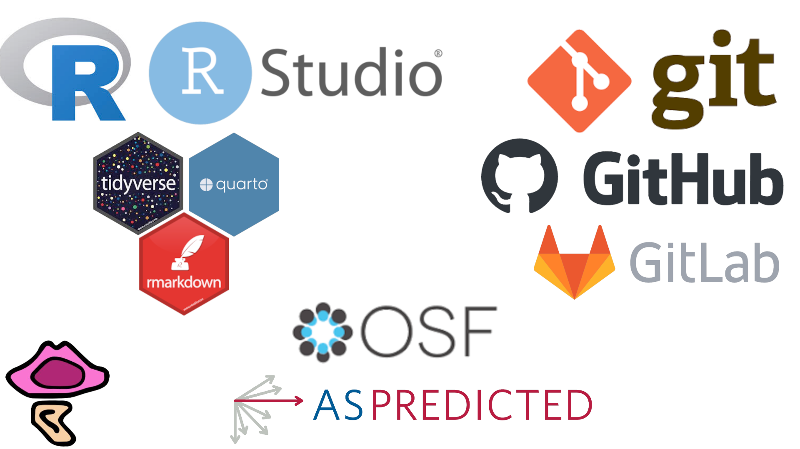
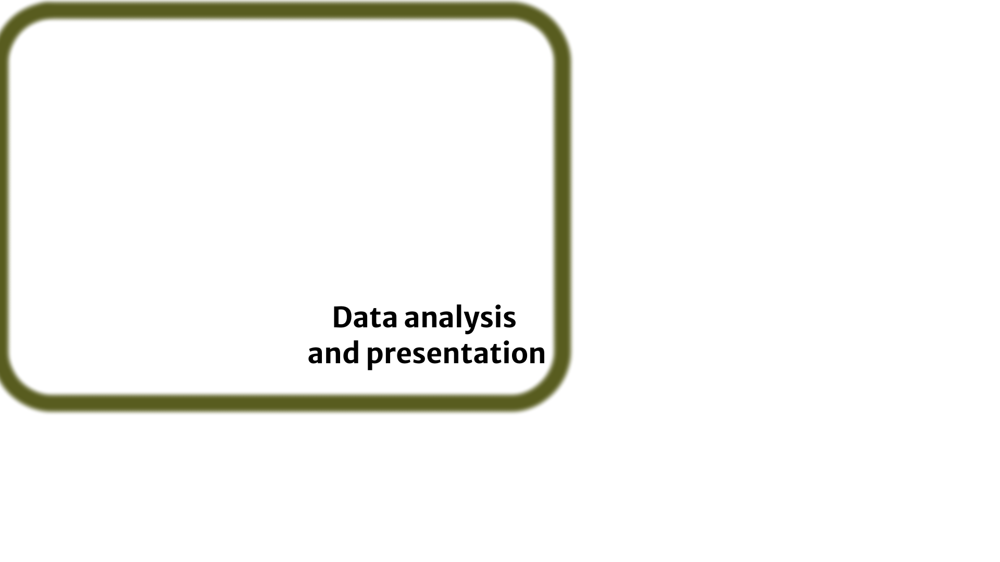
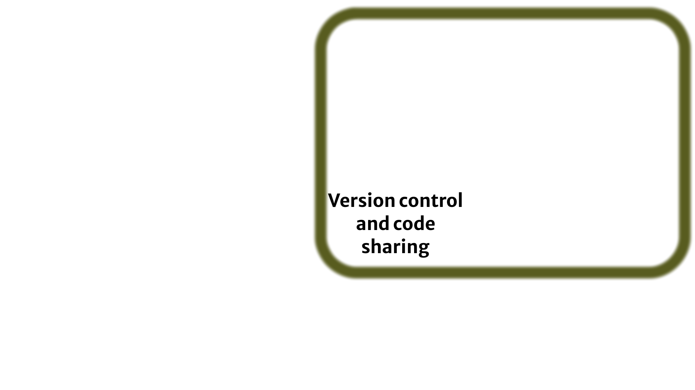
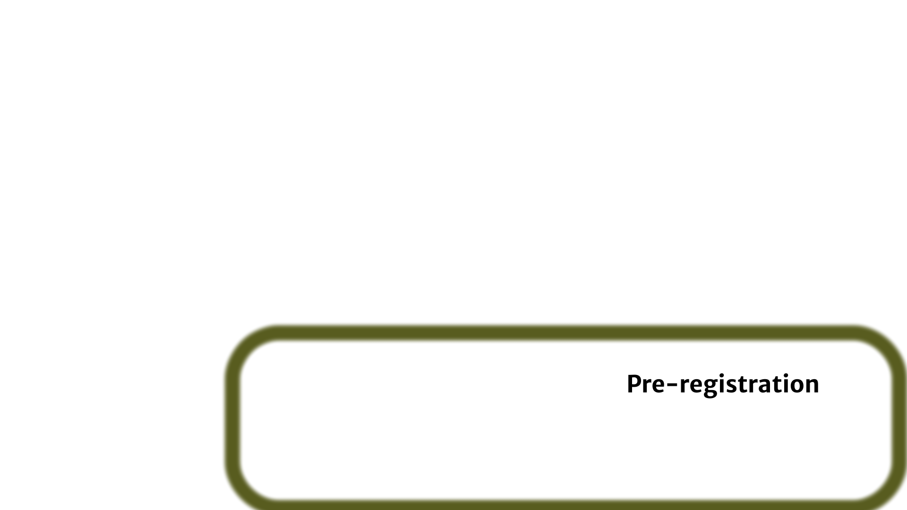
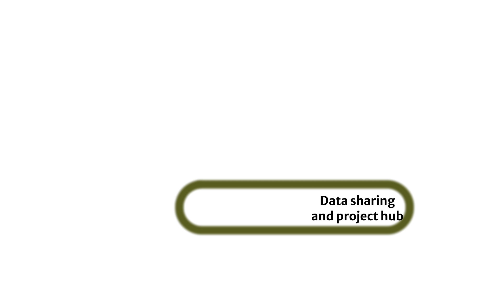
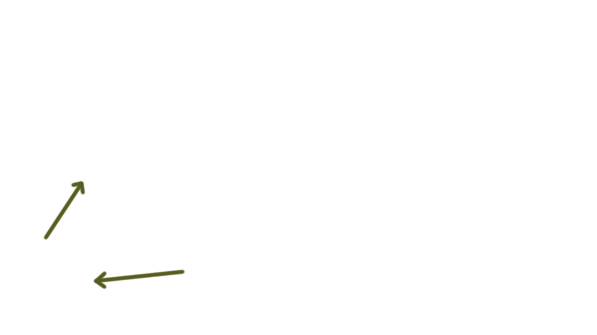
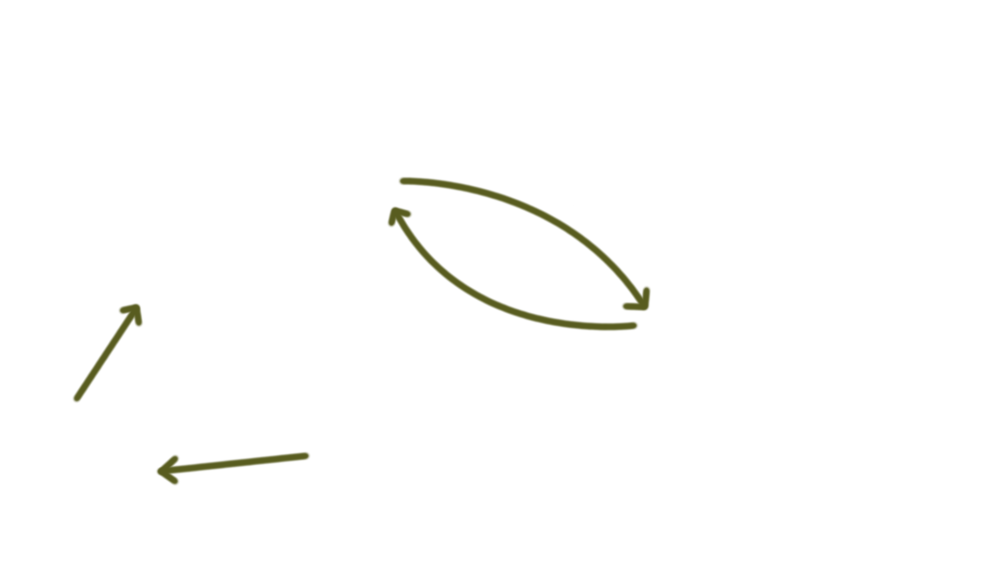
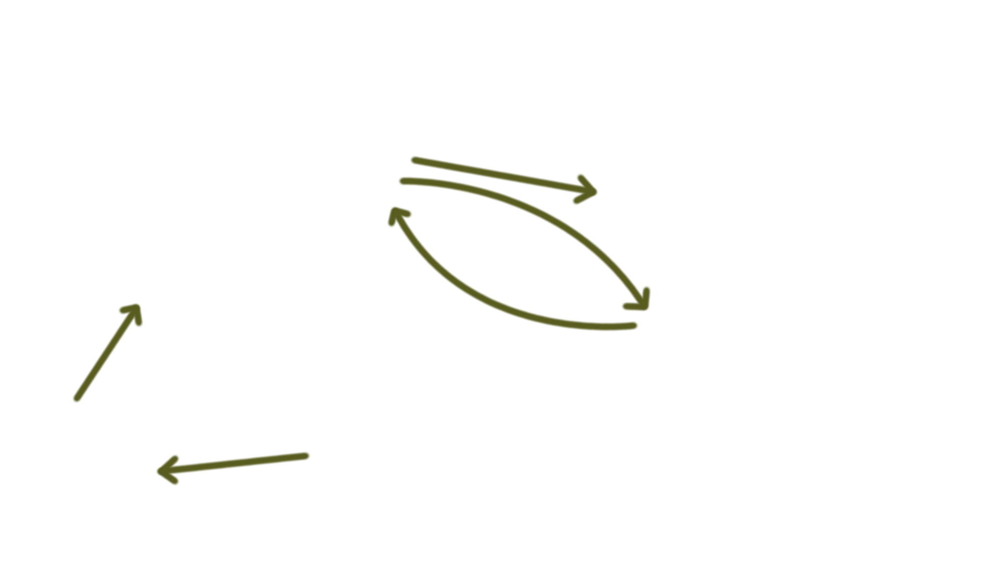
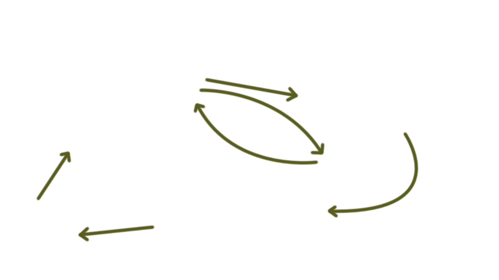
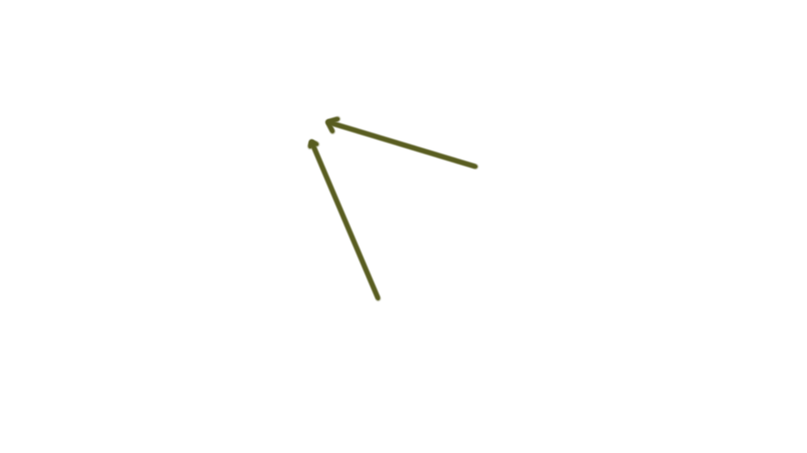
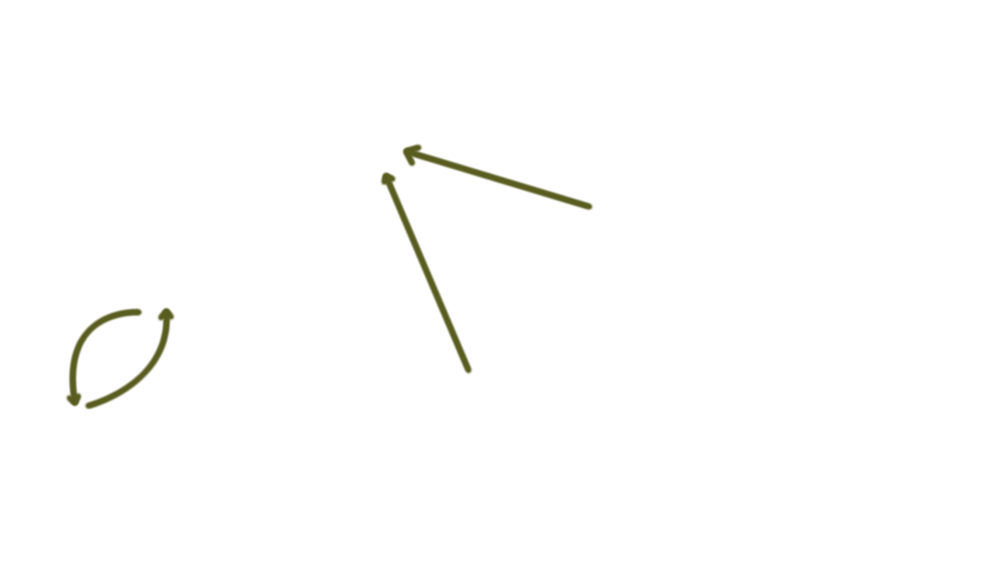
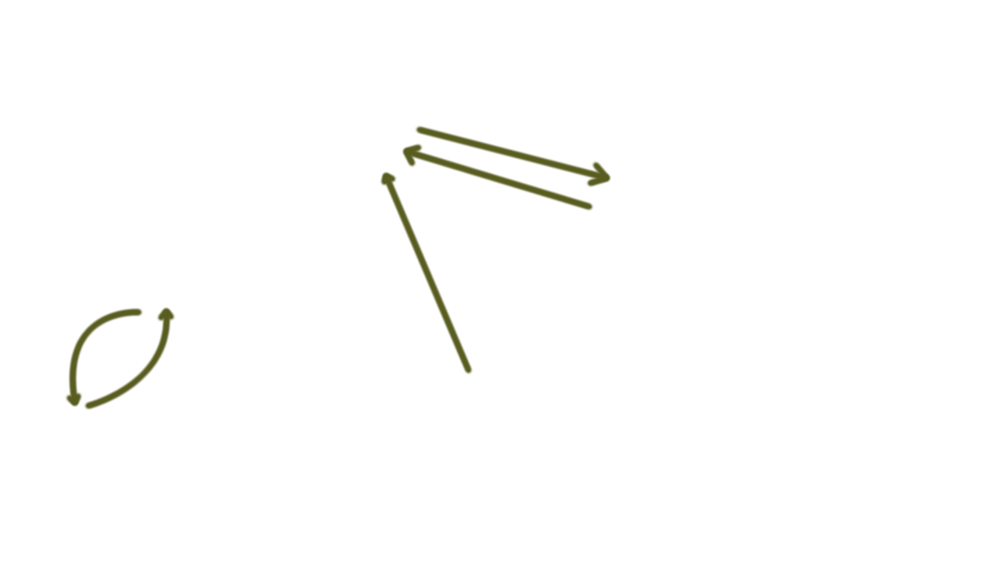
https://nzilbb.github.io/statistics_workshops/
Scroll down to ‘NZILBB induction’
We’ll go in a slightly different order
R and friends
Installing R and R Studio
- Follow the steps here: https://posit.co/download/rstudio-desktop/ OR
- Using the UC Software Centre if you are on a managed UC laptop.
Open RStudio
- Type
install.packages('usethis')into the ‘Console’.
- Well done: you’ve installed your first package.
- This package helps us to interact with GitHub and GitLab.
RStudio
- RStudio is just one option for interacting with R.
- Any text editor will do.
- But RStudio is very well suited for data analysis.
- esp. nice data-viewing and plot-viewing features.
- We will mainly interact with git using RStudio.
Git and friends
Install git
- Windows: download from https://git-scm.com/downloads/win.
- If you are given an option to allow ‘3rd-party software’ say yes.
- macOS: install ‘developer tools’ by opening the Terminal app and typing
xcode-select --install
- Linux: odds are you have it already. If not: https://git-scm.com/downloads/linux.
Create a GitHub account
- https://github.com
- We’ll need to know the email you used very soon.
Connect R and GitHub
- Replace
YOUR NAMEwith your name. - Replace
YOUR GITHUB ACCOUNT'S EMAIL ADDRESSwith the email you used to sign up to GitHub. usethis::git_default_branch_configure()usethis::create_github_token()gitcreds::gitcreds_set()
Test it’s working
- Create a new GitHub ‘repository’.
- Include a ‘README’ file, when given the option.
- Create an R project connected to GitHub:
File > New Project...- Select ‘Version Control’
- Enter the url of your GitHub repository.
- Modify the README file, “commit the change, the push to the remote”
The jargon takes a while…
The R and Git Bible: https://happygitwithr.com/
OSF.io
OSF.io
- Create an account at https://OSF.io
- Search for projects connected to your interests.
- What do they use OSF to share?
What’s next?
What’s next?
Some options:
- Start from scratch,
- Continue from S2, 2024,
- Self-contained sessions, e.g.:
- Intro to R and R Studio,
- Git jargon and problem solving,
- Plotting with
ggplot2, - PCA
References
Allaire, JJ, Yihui Xie, Christophe Dervieux, Jonathan McPherson, Javier Luraschi, Kevin Ushey, Aron Atkins, et al. 2024. rmarkdown: Dynamic Documents for r. https://github.com/rstudio/rmarkdown.
Müller, Kirill. 2020. here: A Simpler Way to Find Your Files. https://CRAN.R-project.org/package=here.
R Core Team. 2024. R: A Language and Environment for Statistical Computing. Vienna, Austria: R Foundation for Statistical Computing. https://www.R-project.org/.
Ushey, Kevin, and Hadley Wickham. 2024. renv: Project Environments. https://CRAN.R-project.org/package=renv.
Wickham, Hadley, Mara Averick, Jennifer Bryan, Winston Chang, Lucy D’Agostino McGowan, Romain François, Garrett Grolemund, et al. 2019. “Welcome to the tidyverse.” Journal of Open Source Software 4 (43): 1686. https://doi.org/10.21105/joss.01686.
Xie, Yihui, J. J. Allaire, and Garrett Grolemund. 2018. R Markdown: The Definitive Guide. Boca Raton, Florida: Chapman; Hall/CRC. https://bookdown.org/yihui/rmarkdown.
Xie, Yihui, Christophe Dervieux, and Emily Riederer. 2020. R Markdown Cookbook. Boca Raton, Florida: Chapman; Hall/CRC. https://bookdown.org/yihui/rmarkdown-cookbook.